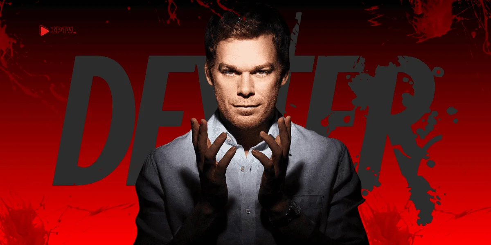

DEXTER
Sobre Dexter
"Dexter" é uma série sobre Dexter Morgan, um analista de padrões de sangue da polícia de Miami que leva uma vida dupla como serial killer. Traumatizado na infância, ele canaliza seus impulsos homicidas (que chama de "Passageiro Sombrio") através de um "Código" ensinado por seu pai adotivo, Harry. Esse código permite que ele mate apenas outros assassinos comprovados que escaparam da justiça. A trama principal acompanha Dexter tentando equilibrar sua vida secreta com a fachada de uma pessoa normal, enquanto trabalha ao lado de sua irmã, a detetive Debra Morgan, e outros colegas que, sem saber, muitas vezes investigam seus próprios crimes (apelidando-o de "Açougueiro de Bay Harbor"). Cada temporada foca em um novo antagonista, geralmente um serial killer rival, que desafia o código e a vida de Dexter.

Informações e series derivadas
Dexter tem 8 temporadas, e também há outras 3 series derivadas da principal, sendo elas:
Dexter: New Blood (2021): Esta é a principal continuação. A série se passa quase 10 anos após o controverso final da 8ª temporada. Dexter Morgan agora vive com uma identidade falsa em uma pequena e gelada cidade no interior do estado de Nova York. Ele tem seu "Passageiro Sombrio" sob controle, mas eventos inesperados, incluindo o reaparecimento de seu filho agora adolescente, Harrison, ameaçam trazer seu antigo eu de volta à tona.
Dexter: Original Sin (2024): Esta série não é uma continuação, mas sim uma volta ao passado. Ela explora a juventude de Dexter, mostrando-o como um jovem estudante no início de sua vida adulta, logo após começar a ser treinado por seu pai, Harry, para canalizar seus impulsos assassinos usando o "Código".
Resurrection (Ainda sem data definida): Esta série foi anunciada como uma sequência direta dos eventos chocantes de Dexter: New Blood, com foco principal no filho de Dexter, Harrison Morgan, e nas consequências das ações de seu pai.